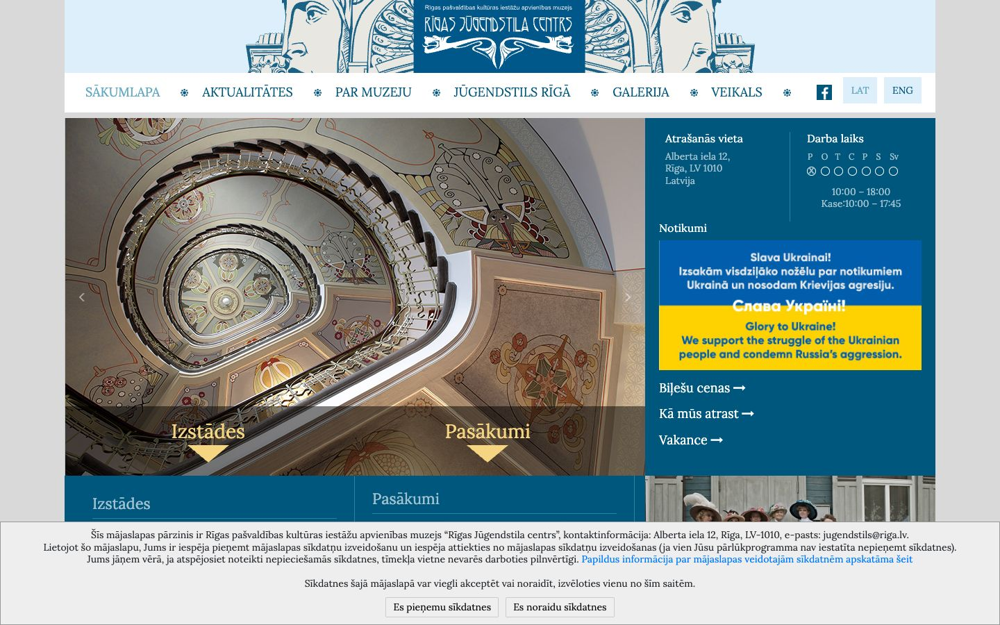

References / Website / 320
Riga Art Nouveau Centre website
The Riga museum’s site crowns a plain blue-and-white layout with a drawn header of Jugendstil masks and flared lettering.
- Source
- jugendstils.riga.lv
- Creator
- Rīgas Jūgendstila centrs
- Style
- Art Nouveau (agent-proposed, not yet reviewed by a person)
- Evidence
- Captured with
tools/capture.mjs(headless Chrome, 1440 × 900) on 28 September 2026 and inspected. A cookie notice covers the bottom sixth of the viewport. - Reviewed
- Rights
- Third-party work, stored with credit for commentary. License: unverified. Rights policy
Observed
- The header is a blue line drawing on pale blue of two large female masks with stylized hair, flanking a dark blue panel with “RĪGAS JŪGENDSTILA CENTRS” in hand-drawn, flared capitals and a curling ornament below.
- The navigation sits on white in a serif (Lora), in mid-blue capitals separated by small snowflake-like ornaments.
- The main area is a photograph of the museum’s spiral staircase with painted Art Nouveau wall decoration, next to a dark blue information column.
- Two overlay labels in yellow serif with yellow triangles sit over the photograph.
- A cookie notice covers the bottom sixth of the viewport.
Why it belongs
Only the header and the photograph carry the style. The blue palette is closer to the Riga facades than to the grammar’s moss and ochre.
Measured: square boxes (radius median 0), 1 px borders on half the boxes, no shadows, two colour families, and accent chroma 0.52.
Borrow
Draw the site header as a line illustration in one colour and set the name inside it in hand-drawn flared capitals.
Separate navigation items with a small ornament instead of a bar.
Measured
Machine-extracted by tools/extract-traits.js on . Full measurement.
- Type families
- Lora (100%)
- Type scale ratio
- 1.18
- Median radius
- 0 px
- Mean chroma
- 0.14
- Palette
- #00577d 23%
- #eeeeee 19%
- #ffffff 16%
- #d9d9d9 13%
- #212529 13%
- #bdc3c4 11%
- #a0c1cf 2%
- #007bff 1%

